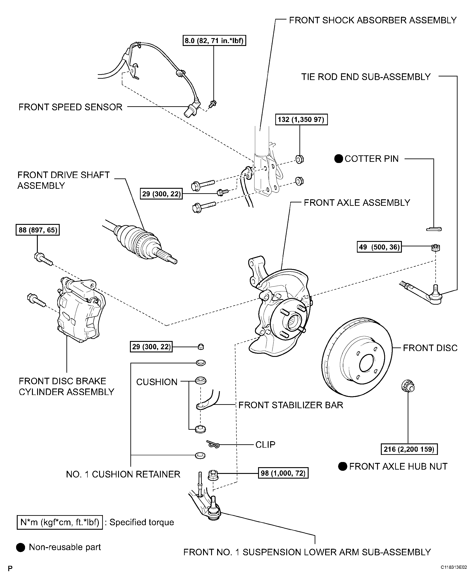
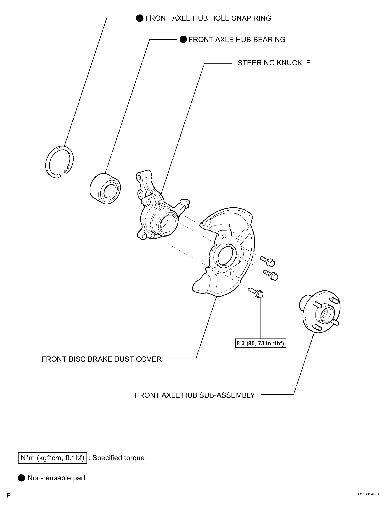

Front Axle Hub: Components
Fig 1: Identifying Front Axle Hub Components (1 Of 2)

Courtesy of © TOYOTA, LICENSE AGREEMENT TMS1002
Fig 2: Identifying Front Axle Hub Components (2 Of 2)

Courtesy of © TOYOTA, LICENSE AGREEMENT TMS1002